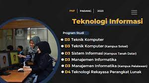

Jurusan Teknologi Informasi memiliki peran penting dalam mengembangkan dan memanfaatkan teknologi informasi untuk mendukung berbagai kegiatan di berbagai sektor. Dalam kurikulumnya, jurusan ini mencakup berbagai mata kuliah yang mencakup pemrograman, jaringan komputer, basis data, dan lainnya.
Untuk informasi lebih lanjut, kunjungi website jurusan Teknologi Informasi.
